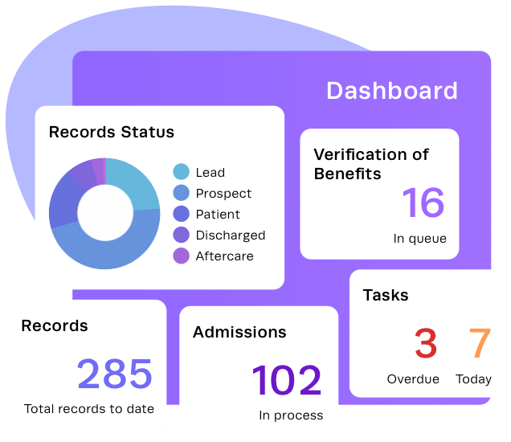
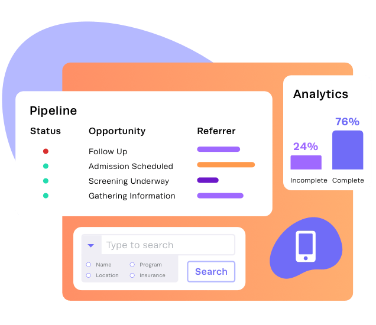
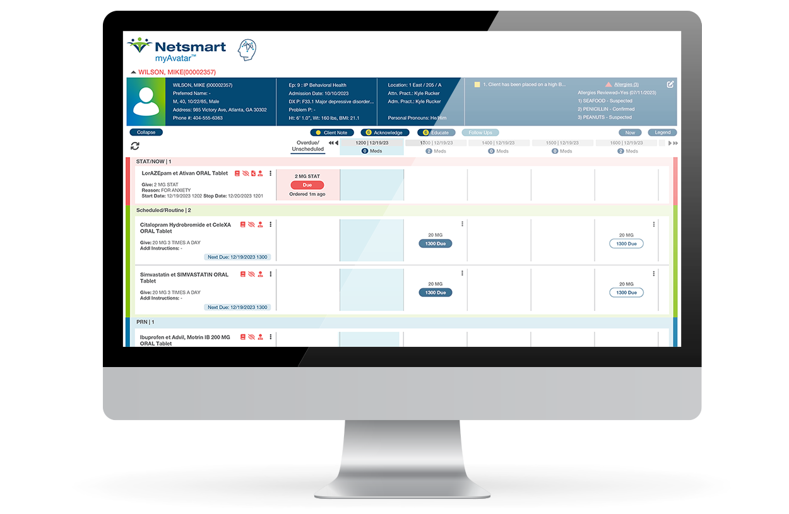
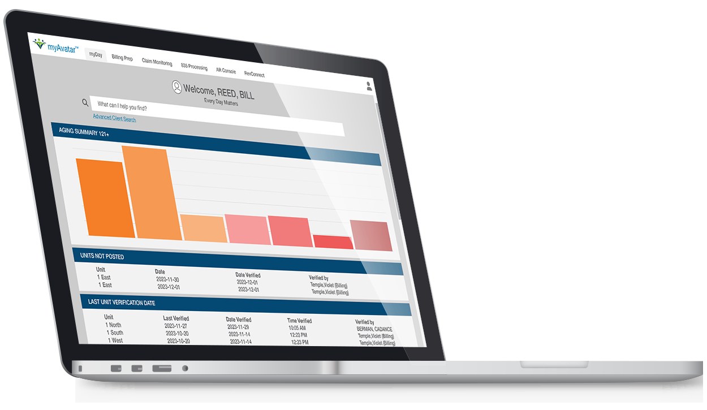
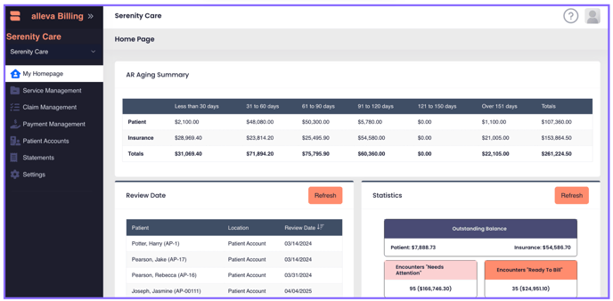

Nexus recovery care market and product research
Research date: November 2, 2026. Audience: Nexus founders, product and engineering teams, and early recovery-center collaborators. Confirmed first scope: United States adult outpatient, intensive outpatient, and partial hospitalization substance-use treatment. The first operating state, payer mix, facility licenses, and customer operating details remain to be confirmed with the cofounder and partner centers. The upcoming Las Vegas conversation is an informal introduction and progress discussion, not a production launch or formal procurement review.
Decision brief
Nexus should compete on the quality of the handoff from care to reimbursement, with a shared operational record and visible accountability. Integration alone is not a defensible claim: Kipu, Lightning Step, Alleva, and Netsmart already describe connected clinical and financial workflows. A more credible proposition is that staff can understand why a task or claim is blocked, who can resolve it, and what changed, without reconstructing the story across screens. This is a product hypothesis to validate, not an established gap in every competitor.
The first release should prove a complete episode: intake, consent, scheduled care, documented attendance, reviewed clinical documentation, billing readiness, a controlled export, and discharge with aftercare tasks. Executives should see aggregate operational consequences of these same events. They should not need unrestricted access to therapy narratives to understand documentation backlog or revenue exposure.
Do not treat QuickBooks as an EMR competitor. It is an accounting boundary. Intuit states that QuickBooks Online does not meet HIPAA privacy standards and recommends against entering individually identifiable health information. Nexus should therefore plan aggregate accounting reconciliation, with disclosure review, rather than patient charts or detailed clinical invoices in QuickBooks. Intuit guidance
The local prototype can omit authentication by explicit project choice. That omission makes it unsuitable for real patient deployment. Permission logic exercised through a local operator selector demonstrates policy behavior; it does not verify the operator's identity. Production identity, access reviews, recovery procedures, risk assessment, contractual arrangements, and clinical governance remain launch gates.
Evidence method and confidence
This review uses official vendor pages and support documentation for capability claims, and federal agencies or standards owners for regulatory and transaction boundaries. Public screenshots are evidence of vendor-published visual examples, not proof of current production behavior or usability. No paid competitor tenant was accessed. Vendor performance percentages, testimonials, and compliance marketing have not been independently validated and are not used as Nexus targets.
Three evidence labels apply throughout:
- Documented: an official source explicitly describes a capability or requirement.
- Observed: a feature is visible in a public image inspected for this review.
- Proposed: a Nexus design recommendation or research hypothesis. Proposed behavior is not evidence of a competitor deficiency or of completed Nexus implementation.
Absence from an inspected page is marked unknown rather than unsupported. Product packaging, add-ons, edition differences, contracts, and payer coverage require vendor confirmation. The source ledger records the URLs and claims supported. Five public visual assets are retained in snapshots/ with provenance and limitations; two are illustrations, and three contain application screenshots. No mock figures from those assets should be copied into Nexus data.
The initial customer and operating problem
The recommended initial customer is a small or midsize adult recovery organization with several programs, clinicians with different responsibilities, and either an internal billing team or an outsourced billing partner. This deliberately avoids attempting to serve every type of hospital, opioid dispensing program, pediatric provider, and community agency in the first release.
Outpatient, IOP, PHP, residential, and OTP are distinct operating contexts. They should not be implemented as cosmetic labels with identical rules. Medicare describes IOP as more intensive than ordinary office care and less intensive than partial hospitalization or inpatient care; its public coverage page refers to care plans requiring at least nine therapeutic hours per week. That Medicare description is not a universal payer rule or a clinical eligibility algorithm. Nexus must attach policy versions to the applicable payer, program, jurisdiction, and dates. Medicare IOP coverage
The proposed wedge is continuity across a changing episode: referral becomes an admission, care level changes, insurance changes, authorization units are consumed, a clinician leaves, a note requires a correction, and a claim is returned. Each event should update the relevant views without hiding the original record. Recovery organizations also need a respectful discharge process: aftercare referrals, medication and safety instructions where appropriate, consent boundaries, unfinished documentation, and outstanding balances remain different concerns. Financial status must not silently become a clinical recommendation.
Before expanding scope, obtain representative, de-identified workflows from three centers. At least one should have in-house billing and one should outsource it. Interview a clinician, admissions worker, billing specialist, supervisor, and executive separately. Their reports should be compared against actual task observations rather than averaged into a single feature wish list.
Competitor assessment
Kipu
Kipu is a direct comparator for addiction and behavioral-health workflows. Its public CRM material describes admissions, benefits verification, vacancy visibility, referral operations, and transfer of pre-admission information into its EMR. Its EMR product page covers documentation, scheduling, outcomes, medication work, and patient engagement. These are established competitive table stakes, not areas Nexus can call absent. Kipu CRM, Kipu EMR
More useful than a broad marketing claim is Kipu's integration support article: it assigns demographics and charges to the EMR and insurance, utilization plans, and billing to RCM. It also links procedures for transmission errors and charge transfer. Nexus should use this as a test case for explicit data ownership and visible integration failures. A unified database can reduce internal synchronization work, but it does not eliminate external payer reconciliation. Kipu integration overview
Kipu's May 2026 update separates recent deliveries from its roadmap: expanded AI documentation is listed among deliveries, while treatment episodes, cross-platform visualization, and additional utilization-review work appear in roadmap sections. A roadmap entry is not proof of availability in a customer's product. A claim that Kipu is static or lacks AI would therefore be unsupported. In a live vendor comparison, ask staff to show one unsigned-note-to-charge handoff and one insurance correction affecting previously created claims. Measure elapsed time, context switches, and recovery from an error. Kipu 2026 update
Lightning Step and Sunwave
Lightning Step's homepage now identifies it as part of Sunwave. It markets CRM, EMR, RCM, one-login access, and LIA documentation assistance. Nexus should treat the relationship and product packaging as current due-diligence items, not assume these are unrelated suppliers. Time-saving and AI-certification statements on that page are vendor assertions, not findings independently established by this review. Lightning Step
The comparison task is operational: follow one person from inquiry to discharge, then trace a denied claim back to its source service and documentation. Test whether role switching changes the content shown and whether a supervisor can resolve an exception without giving broad administrative access. Nexus's proposed advantage is transparent, bounded decisions and a consistent experience across roles. It will need observed evidence to show that advantage over this already integrated offering.
Alleva
Alleva's support documentation is unusually specific about the route from service to claim. Services produce encounters according to billing rules; reviewed encounters pass through an encounter transmission table into billing, then to Waystar. Rules can use care level and insurance to determine codes, modifiers, charges, and units. This is evidence that a reviewable clinical-to-financial bridge is already available in the market. Alleva EMR to billing connection
For Nexus, the opportunity to test is whether readiness reasons are understandable at the point of documentation, with responsibility assigned before the billing team receives an incomplete encounter. Do not let a clinician silently change payer coding merely to clear a warning. Preserve clinical facts, configurable billing interpretation, reviewer approval, and external submission as separate steps. Compare this workflow with Alleva's current billing overview in a vendor demo. Alleva billing overview
BestNotes
BestNotes describes addiction-treatment documentation, group notes, treatment plans, medication workflows, outcome tools, and AI drafting. Its published material distinguishes OBOT and outpatient or residential prescribing from daily on-site OTP dosing. That explicit scope distinction is instructive: Nexus should be equally clear about what a care-level label actually supports. BestNotes also describes external prescribing partners, illustrating that even a focused product can own its workflow while integrating specialized infrastructure. BestNotes addiction treatment
The right comparison is a frequent group-session workflow: schedule a group, record attendance, document shared content once, add individualized observations, review each person's note, and account for absences without accidentally generating charges. Also test how a correction is applied after signature. Do not infer which edition supports a feature without checking the current Classic/Fresh documentation and the customer's contracted product.
Netsmart myAvatar
Netsmart positions myAvatar for broad behavioral-health operations across community, residential, and inpatient settings. Its public page describes role-based clinical workflows, integrated financial activity, reporting, and complex reimbursement contexts. The breadth is a useful reference, but it should not expand Nexus's initial scope to every setting. Netsmart myAvatar
The retained clinical screenshot exposes many concurrent medication and timing details; the financial image presents aging and verification work. These demonstrate operational density, not that users find the product difficult. Nexus should preserve important information while introducing progressive disclosure, clear summaries, and consistent action placement. A prettier sparse dashboard that hides due work would be a regression. Measure task success with users who need dense information before choosing a visual simplification.
QuickBooks as accounting infrastructure
Nexus should own the clinical financial subledger: charges, claim versions, remittance allocations, adjustments, patient responsibility, and reconciliation. A general ledger may receive appropriately reviewed aggregate journal entries, period totals, and reconciliation references. A patient identifier replaced by an easily reversible label is not automatically de-identified. Validate export content and destination policy before connecting. Intuit HIPAA guidance
Do not attempt to replace payroll, tax reporting, bank connectivity, and a mature general ledger just to reduce integration count. The proposed boundary is an adapter with explicit mappings, an export preview, idempotent batches, and a reconciliation report. Start with a controlled file export. Record an external batch reference only after the export or import actually succeeds.
Capability comparison
The matrix describes public evidence, not tested feature parity or an exhaustive inventory. “Documented” does not establish usability, contractual inclusion, or performance.
| Capability | Kipu | Lightning Step | Alleva | BestNotes | myAvatar | Nexus target |
|---|---|---|---|---|---|---|
| Recovery/behavioral-health focus | Documented | Documented | Documented | Documented | Documented | Adult recovery episode first |
| Connected clinical and billing work | Documented integration | Marketed integrated suite | Documented encounter transfer | Confirm exact edition/package | Documented | Shared internal records and explicit external boundaries |
| Admissions/referral operations | CRM documented | CRM documented | Confirm scope | Confirm scope | Confirm scope | Intake worklist tied to episode |
| Group care workflow evidence | Group scheduling documented; confirm note flow | Confirm live flow | Groups in service flow | Documented group notes | Group appointments documented | Attendance and individual review before charge readiness |
| AI documentation | 2026 update describes it | LIA marketed | Not assessed in selected sources | Ambient/dictation drafting described | Not assessed in selected sources | Optional local processing and human acceptance |
| Executive financial visibility | RCM/reporting described | Reporting marketed | Confirm detailed dashboards | Confirm edition | Financial dashboards documented | Traceable metrics from operational events |
| User experience superiority | Not established | Not established | Not established | Not established | Not established | Validate with timed comparative tasks |
Evidence: Kipu EMR features, Kipu integration, Kipu delivery and roadmap distinction, Lightning Step, Alleva workflow, BestNotes, myAvatar.
Visual observations and design implications
The five retained assets are documented in the snapshot manifest. Kipu's public admissions and business-development images are simplified marketing illustrations; they communicate queue counts, stages, and tasks but cannot support conclusions about actual navigation. The myAvatar images embed recognizable application screens in device artwork; they show clinical density and financial work queues, but not keyboard behavior, responsiveness, loading states, or full accessibility. Alleva's billing support screenshot shows navigation separating service management, claims, payments, accounts, and statements, with aging and review work on the home screen. Nexus should test whether a shared worklist improves completion time rather than assuming that consolidating these screens is always better.
Proposed Nexus visual principles:
- Use one stable client and episode context across clinical, operational, and billing screens. Make a program transfer visible without duplicating the person.
- Place the next action beside its reason. “Documentation pending — supervisor signature required” is more useful than a generic red badge.
- Distinguish clinical urgency, administrative deadlines, and financial exposure. A financial warning must not resemble an emergency clinical alert.
- Provide a compact work mode for experienced staff and guided forms for occasional users. Do not remove labels to achieve visual minimalism.
- Preserve space, warmth, and restrained color without turning a medical record into a marketing page. Use typography and alignment to organize dense records.
- Make empty states actionable and truthful. Zero clients means no clients have been entered; it should never be filled with fictional people to improve a dashboard.
- Use accessible focus, text alternatives, sufficient contrast, explicit error summaries, and non-color status cues. Validate keyboard operation and narrow screens using actual tasks.
These are Nexus design decisions. A vendor screenshot does not validate them; usability testing does. Figma history should be a reference for intent, not an immutable design specification. No Nexus Figma assets were identified or evaluated in this research task.
Workflow opportunities to validate
Explainable billing readiness
Proposed feature: a service-level checklist derived from actual records, with separate clinical, authorization, coverage, and billing checks. Each blocker names its source, owner, and allowed remedy. A signed note can be clinically complete while its claim remains blocked by an authorization gap. Record why a user overrides a non-clinical rule and who approved it; never quietly turn a warning into approval.
Validation: ask billing staff to classify 20 de-identified rejected or delayed encounters. Measure how often the underlying issue was knowable before the service, at documentation, or only after submission. Success is a reduction in rework and elapsed time, not merely fewer visible warnings. Competitors already have billing rules, so the comparison must measure earlier detection and resolution effort.
Continuity through transfers and discharge
Proposed feature: a single longitudinal person record with distinct episodes, care-level intervals, team assignments, and consents. A transfer should create an effective-dated change with handoff tasks rather than overwrite the past. Discharge should close care activity appropriately while keeping billing follow-up and record retention intact.
Validation: reconstruct three real transfers and three discharges. Identify who loses visibility, what is copied by hand, and what remains incomplete. Distinguish preventable coordination defects from mandatory separate forms. Track missed handoffs and elapsed time to completed aftercare documentation.
Executive insight with limited disclosure
Proposed feature: executives see census, open tasks, unsigned documentation, authorization exposure, and receivable trends backed by explicit definitions and drill-down permissions. Every metric has a date window and population definition. “Revenue” must not blur charges, expected allowed amounts, payments, and cash deposits.
Validation: reconcile one weekly operating meeting to source transactions. Ask which decisions are taken and which data are distrusted. A dashboard earns its place only if it helps an owner take a specific action. Restrict narrative access and monitor unusual drill-down activity.
Staff lifecycle and exceptions
Proposed feature: onboarding records role, facility scope, supervisor, credential status, training acknowledgments, and effective dates. Offboarding revokes access when identity is connected, transfers open work, preserves signed authorship, and records exceptions. Temporary access has a reason, approver, resource scope, expiration, and later review.
Validation: observe the last hire, leave, termination, and cross-coverage request. Count orphaned tasks and permissions retained without a current justification. An “administrator” role should not become the workaround for every unusual workflow.
Data model recommendations
The following is a design proposal, not a description of existing implementation. Use relational constraints for identity and financial facts; reserve flexible JSON for versioned form answers and imported source payloads where structure genuinely varies.
| Domain | Proposed records | Essential invariant |
|---|---|---|
| Organization | Organization, facility, program, care level | References remain within the permitted organization; facilities are not free-text identifiers |
| Workforce | Staff, credentials, role assignments, permission grants, supervisor relationships | Changes are effective-dated; deactivation preserves authorship |
| Person and episode | Client, contact, referral, episode, care-level interval, assignment | A person may have many episodes; prior admissions are not overwritten |
| Consent | Consent version, signatory, scope, purpose, expiration, revocation, disclosure | Revocation is an event; legal basis is not inferred from a checkbox alone |
| Care | Session, participant attendance, treatment plan/version, goal, note/version, signature, amendment | Attendance is individual; signed content changes through amendment |
| Forms | Template/version, applicability rule/version, response, review | A completed response retains the version actually used |
| Coverage | Payer, policy, subscriber, coverage interval, verification result, authorization | Service date determines relevant coverage; authorization use is atomic |
| Finance | Charge, claim/version, line, submission, acknowledgment, remittance, payment allocation, adjustment | Money uses exact units; an external status requires external evidence |
| Operations | Task, assignment, due date, escalation, attachment metadata | No invisible reassignment or silent completion of required work |
| Evidence | Audit event, integration job, source import, reconciliation batch | Corrections preserve lineage and are attributable |
Separate current state from history. A current note status is useful for a worklist, while signature and amendment records explain how it arrived there. Use transactions when a mutation changes related state, such as consuming authorization units or allocating a payment. Use optimistic concurrency to prevent a delayed browser save from overwriting another clinician's edit. Display conflicts as recoverable user work, not generic server errors.
Dates require domain meaning: service time, facility time zone, payer billing date, recorded-at timestamp, and effective date are not interchangeable. Store an unambiguous instant for events and retain the relevant business date. Avoid calculating age, authorization validity, or daily attendance exclusively from the browser's time zone.
Financial reporting must distinguish a claim from its versions and attempts. A resubmission cannot create a second clinical service or double the receivable. Payments need allocation and reversal rather than destructive editing. Reconciliation should be explainable to a biller using the original claim, response, and adjustment reason.
Regulatory and security boundaries
HIPAA and operational safeguards
HHS describes administrative, physical, and technical safeguards, including risk analysis, access controls, audit controls, integrity, and transmission security. Authentication is only one component; adding OAuth later does not independently establish compliance. The product team should maintain a control matrix with owner, implementation, test, evidence, and unresolved risk. HHS Security Rule summary
HHS's minimum-necessary guidance requires policies to identify workforce needs and permitted information categories; it also identifies exceptions, including treatment disclosures between providers. Nexus should not misrepresent a blanket “minimum necessary” rule as applying identically to every treatment exchange. Proposed policy checks should include role, organization, assignment, purpose, information category, and effective dates. HHS minimum necessary guidance
Substance use records and consent
Part 2 applies to federally assisted SUD programs and some recipients of their records. HHS identifies February 16, 2026 as the compliance date for the updated rule. Its current guidance permits a single consent for future treatment, payment, and health-care operations uses and disclosures, while retaining restrictions for proceedings against a patient. This is not a blanket authorization for all recipients, purposes, or records. HHS Part 2 overview
Design consent records so the applicable form, recipient category, purpose, signature, effective period, revocation, and disclosure basis are recoverable. The final-rule fact sheet also describes special handling for SUD counseling notes. Legal review must determine applicability, exceptions, redisclosure notices, and local templates. Do not equate a general treatment consent with recording consent or a release for legal proceedings. HHS final-rule fact sheet
Progress notes and psychotherapy notes
HHS distinguishes separately maintained psychotherapy notes from ordinary medical-record summaries and progress information. The special protection does not apply merely because a template is called a therapy note. Nexus should define separate information categories, storage/access rules, and export behavior rather than placing all session text into a broadly accessible chart. Determine with clinical and legal reviewers whether any separate psychotherapy or SUD counseling-note feature belongs in the initial product. HHS mental-health FAQ
Hosting and vendors
A cloud provider maintaining ePHI can be a business associate even if it lacks the encryption key. Appropriate contracts and risk management therefore remain relevant to storage, backups, telemetry, transcription, and support tools. Encryption alone does not remove that relationship. HHS cloud guidance
Vercel states that Pro teams can enter a self-service BAA, and its guidance describes shared responsibility. A paid subscription alone is not evidence that an applicable agreement is in place or every configured service is covered. Verify the account's accepted agreement, product scope, observability settings, previews, log content, regions, and subprocessors before ePHI. Vercel Pro BAA announcement, Vercel healthcare deployment guidance
The proposed deployment keeps the React frontend on Vercel and runs the existing Rust service and Postgres on suitable separate infrastructure. This is a recommendation for the retained architecture, not a statement that all alternative Vercel runtimes are unsupported. Keep PHI out of URLs, static builds, analytics events, and client-side error reports. Test backups by restoring them, and establish account termination and export procedures before onboarding a customer.
Billing build and integration strategy
Nexus can build charge capture, billing rules, readiness review, work queues, payment allocation, and operational reporting internally. It should not represent a local claim status change as payer acceptance. CMS documents distinct electronic transactions for claims, remittance, eligibility, and status. Medicare's transaction requirements are a starting point, not a substitute for each trading partner's implementation guide and enrollment. CMS EDI overview, CMS Claims Processing Manual chapter 24
Proposed status model: draft → internally ready → exported/queued → transmitted → accepted or rejected → adjudicated → reconciled. Keep cancellation, correction, denial, appeal, and void/replacement relationships explicit. An acknowledgment that a file was received is not adjudication. Preserve the source response and normalized interpretation together, and make retry idempotent.
A clearinghouse adapter is likely the most efficient first production route. Direct payer connectivity is technically possible for supported relationships, but enrollment, certification, routing, changing companion guides, acknowledgments, support, and reconciliation remain work Nexus would own. CMS's contractor guidance explicitly includes EDI enrollment steps. Assess total maintenance and response obligations rather than counting a single external dependency as inherently undesirable. Noridian EDI enrollment
Do not embed a scraped proprietary coding library. AMA provides licensing guidance for CPT content; software use should be reviewed for the relevant license. Likewise, clinical instruments and placement criteria may have use conditions. Start with configurable customer-owned code mappings and licensed catalogs, with source and version recorded. AMA CPT licensing FAQ
A billing subject-matter expert must approve payer-specific rules, examples, and expected outputs. Tests should cover overlapping coverage, expired authorizations, absence, partial attendance, corrected notes, duplicate transmission, denied lines, partial payments, overpayments, reversals, and refunds. A universal “billable” flag cannot represent these cases.
Speech recognition and form assistance
The product requirement should be owned workflow and portable processing, rather than training a new speech-recognition model within a prototype deadline. An open implementation such as whisper.cpp provides local inference across supported hardware, but model assets, licenses, packaging, updates, and accuracy evaluation remain dependencies. Self-hosting reduces reliance on a hosted inference vendor; it does not make recognition deterministic or clinically validated. whisper.cpp project
Proposed sequence: confirm permitted recording and participants → record with an obvious active indicator → store protected audio under a defined retention policy → transcribe → review uncertain segments and speaker attribution → map proposed facts to versioned form fields → clinician accepts or rejects changes → sign the reviewed note. Preserve provenance, model/version, and reviewer action. Never convert model text directly into a signed note, diagnosis, medication order, or payer submission.
A group session is materially harder than dictation: overlapping speech, names, multiple participants, speaker attribution, late arrivals, and one person's refusal create confidentiality and accuracy problems. Start evaluation with clinician dictation or consented single-speaker recordings. Offer a complete manual path so recording refusal never disables basic care documentation. Do not treat a generic browser microphone prompt as patient consent.
Recording rules depend on jurisdiction and communication mode. Nevada's statutes distinguish wire communications and private conversations; that source is not a basis to declare a nationwide consent rule. The meeting's location in Las Vegas does not establish the treatment organization's jurisdiction. Obtain state-specific review before enabling recording, including remote participants in other states. A conservative all-participant permission workflow can be a product policy without claiming it resolves every legal requirement. Nevada NRS chapter 200
Evaluate clinically meaningful error categories: negation, speaker identity, medication/dose, dates, substance names, safety statements, and omitted context. Track correction effort and hallucinated additions as well as word error rate. Form recommendations should be based on published internal applicability rules and current episode facts; do not pretend that a language model can determine every mandatory form or legal requirement.
Dependency decisions
| Capability | Recommendation | Reason and acceptance test |
|---|---|---|
| Design system | Own components and design tokens | Fits Nexus workflows; verify accessibility, keyboard use, and consistency |
| Persistence and API | Retain Rust and relational Postgres | Transactional integrity and existing investment; prove migrations, restore, concurrency |
| Identity | Integrate later, as requested | Credential security is not a useful reinvention; actor mapping must feed the same policy layer |
| Clinical and billing workflows | Own domain rules and UI | Core differentiation; validate with clinicians and billers |
| Transcription | Optional local model adapter | Keep provider portability; validate hardware, consent, accuracy, and manual fallback |
| Claims network | Start with an adapter and test environment | External enrollment and payer rules cannot be replaced by internal UI |
| Accounting | Aggregate export before direct connection | Maintain financial reconciliation without moving clinical records |
| E-prescribing/labs | Defer or integrate qualified systems | Specialized networks, safety, contracts, and validation exceed a generic CRUD feature |
| Monitoring | Minimal metadata and controlled tooling | Detect failures without leaking patient content |
Minimizing dependencies should mean fewer poorly understood contracts and clearer replacement boundaries. Rewriting cryptography, media codecs, database engines, or a recognition model adds risk without improving the clinical experience. Maintain a dependency inventory with owner, purpose, license, update cadence, and replacement strategy.
Validation and release plan
The stakeholder prototype should start empty and accept deliberately entered evaluation records. It should show a real persisted flow, including a failed action with a clear remedy, rather than prefilled success statistics. Separate fixtures used in automated tests from application data, and never load fixtures into a customer environment automatically.
The first acceptance scenario should create an organization and facility, configure a staff role, admit a client, record consent and coverage, schedule care, document attendance, save and review a note, determine billing readiness, create a claim draft/export, show its executive aggregate, and discharge with follow-up work. Include a restart to prove persistence. Run the same relevant actions under restricted roles and verify denial at the API, not just hidden buttons.
Before any patient pilot: authenticate real users, enforce organization/facility boundaries, complete clinical/legal workflow review, sign applicable agreements, restore a backup, test incident response, validate exports and consent handling, define support escalation, and agree on retention and access policies. These are release gates, not a claim that Nexus is certified after checking boxes.
Success measures for the pilot should be baselined before launch: time to complete intake, proportion of notes requiring rework, age of unresolved authorization issues, days from service to ready charge, duplicate entry count, tasks without owners, and time to reconcile a financial discrepancy. Include staff comprehension and client dignity alongside throughput. Do not optimize a billing speed metric by encouraging inaccurate documentation.
Interview guide for the cofounder and partner centers
Ask participants to show the last ordinary case and the last exception, using de-identified examples. Avoid asking only whether they like a feature.
- Which programs, states, licenses, payers, and contracting arrangements define the center?
- Where does referral information first enter, and who retypes it later?
- What must be true before admission, before a session, before signature, and before a charge is released?
- Who decides which form is required, and how are updated requirements communicated?
- What happens when coverage or care level changes midway through treatment?
- Show an authorization exhaustion case. When could the team first have detected it?
- Show a signed note correction. Which downstream records need to be reconsidered?
- What can a biller see that they do not need? What can a clinician not see that blocks work?
- How are supervisor coverage and temporary access granted and removed?
- What happens to unsigned notes, open tasks, and appointments when a staff member leaves?
- What does leadership reconcile weekly, and which metric definitions are disputed?
- Which part of discharge is most often unfinished, and what harm or rework results?
- Would clients and clinicians accept recording? Under which settings would they refuse?
- Which external connections are mandatory on day one, and which are convenience exports?
- What records must be available if the vendor is unavailable or the contract ends?
- Which three tasks would justify switching, and what migration cost would prevent switching?
Record role, organization context, task, observed behavior, frequency, severity, workaround, and confidence for each finding. Prioritize repeated high-cost workflow failures over isolated aesthetic preferences. Revisit the opportunity hypotheses after these interviews; do not turn this initial research into a fixed roadmap without operating evidence.
Sources and visual provenance
The source ledger lists primary materials and retrieval date. The snapshot manifest links each retained visual to its publisher and original URL. All competitor conclusions in this document are limited to those public materials. Product recommendations and data-model rules are Nexus proposals requiring implementation and validation.
Visual reference gallery
Official publisher assets retrieved November 2, 2026. Copyright and trademarks remain with the publishers. Public examples are not tested tenant workflows.





Nexus research source ledger
Retrieved November 2, 2026. This ledger identifies primary sources supporting the accompanying research. Vendor pages establish published claims, not independently tested outcomes. Regulatory materials establish research context; applicability and implementation require qualified review. No pricing or contractual coverage should be inferred beyond a signed agreement.
| ID | Publisher and source | Supports | Qualification |
|---|---|---|---|
| V01 | Kipu CRM | Admissions, pipeline, CRM/EMR linkage | Marketing page; retained illustrations are not live UI captures |
| V02 | Kipu EMR | Documentation, scheduling, outcomes, clinical features | Vendor product claims |
| V03 | Kipu integration overview | EMR and RCM source ownership, transfer workflows | Updated January 22, 2026; no tenant tested |
| V04 | Kipu 2026 product update | Continued development and AI/episode/reporting direction | Updated May 20, 2026; distinguishes recent deliveries from roadmap items; availability/package must be confirmed |
| V05 | Lightning Step | Sunwave relationship, integrated suite, LIA marketing | Current homepage; performance claims not validated |
| V06 | Alleva EMR to billing | Encounter table, rules, review, Waystar boundary | Official workflow documentation |
| V07 | Alleva billing overview | Billing product context | Package and live behavior not tested |
| V08 | BestNotes addiction treatment | Group notes, planning, AI, OBOT/OTP scope distinction | Current editions may differ |
| V09 | Netsmart myAvatar | Integrated clinical/financial/operational positioning and images | Public images and claims, no hands-on tenant |
| V10 | Intuit HIPAA guidance | QBO privacy limitation and health-information caution | Page displays update August 3, 2026 |
| R01 | HHS Part 2 overview | Applicability, compliance date, TPO, restrictions | Current agency guidance |
| R02 | HHS Part 2 final-rule fact sheet | Consent changes and counseling-note treatment | Updated January 30, 2026 |
| R03 | HHS Security Rule summary | Safeguard families and security obligations | Do not conflate proposals with current rules |
| R04 | HHS minimum necessary | Workforce policies and treatment exception | General guidance; context matters |
| R05 | HHS mental-health information FAQ | Psychotherapy notes versus ordinary record content | Specific legal category, not template naming |
| R06 | HHS cloud guidance | BA relationships, encryption, shared controls | Applies according to actual data/service relationship |
| R07 | CMS EDI overview | Electronic billing framework | Medicare context |
| R08 | CMS Claims Processing Manual chapter 24 | Transaction distinctions including 837/835/270/271/276/277 | Payer companion guides and enrollment also required |
| R09 | Noridian EDI enrollment | Example actual trading-partner enrollment | Contractor-specific, not every payer |
| R10 | Medicare IOP coverage | IOP context and coverage description | Not a universal commercial/Medicaid rule |
| R11 | Nevada NRS chapter 200 | Recording provisions vary by communication type | State-specific; no nationwide rule inferred |
| R12 | AMA CPT licensing FAQ | Code content licensing review | Do not distribute proprietary catalogs without rights |
| T01 | Vercel Pro BAA announcement | Self-serve BAA availability for Pro | Verify agreement in actual account |
| T02 | Vercel healthcare guidance | Shared responsibility and deployment considerations | Subscription alone is not compliance |
| T03 | whisper.cpp | Local speech-recognition implementation candidate | No clinical accuracy claim; license/model review needed |
Research limitations
No authenticated competitor product was tested. No competitor pricing quotes, BAAs, contracts, implementation timelines, or uptime records were obtained. Public testimonials and claimed percentages were not adopted as facts about expected performance. No Nexus Figma source was reviewed. California's official statute page returned 403 during retrieval; it is not cited as a verified legal source here. The linked Nevada source is used only to illustrate the need for jurisdiction-specific review.